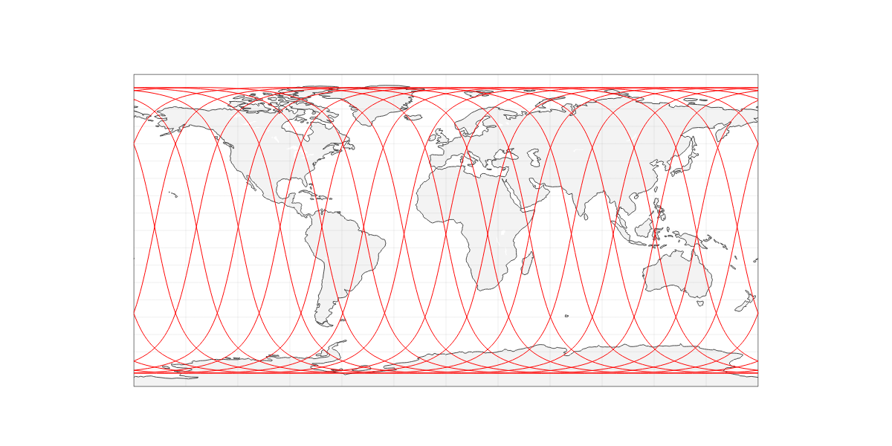
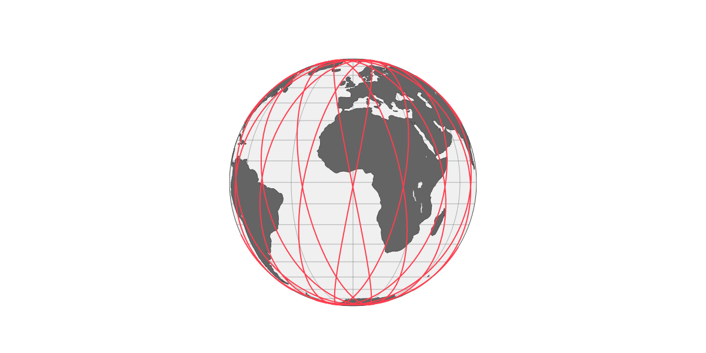
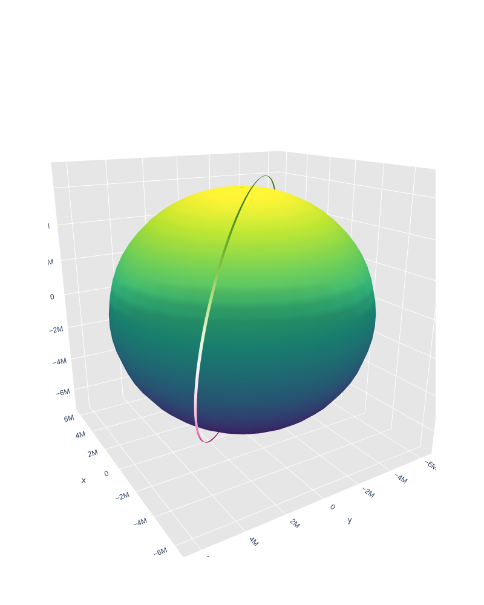

Orbit Computation¶
This tutorial demonstrates how to generate satellite orbits using various models.
Setup¶
import numpy as np
import pandas as pd
import plotly.graph_objs as go
from ostk.physics.unit import Length
from ostk.physics.unit import Angle
from ostk.physics.time import Scale
from ostk.physics.time import Instant
from ostk.physics.time import Duration
from ostk.physics.time import Interval
from ostk.physics.time import DateTime
from ostk.physics import Environment
from ostk.astrodynamics.trajectory import Orbit
from ostk.astrodynamics.trajectory.orbit.model import Kepler
from ostk.astrodynamics.trajectory.orbit.model.kepler import COE
from ostk.astrodynamics.trajectory.orbit.model import SGP4
from ostk.astrodynamics.trajectory.orbit.model.sgp4 import TLE
from ostk.astrodynamics.utilities import convert_state
from ostk.astrodynamics.display import create_2d_map
from ostk.astrodynamics.display import create_3d_globe
SGP4¶
Computation¶
environment = Environment.default()
Create a Classical Orbital Element (COE) set:
a = Length.kilometers(7000.0)
e = 0.0001
i = Angle.degrees(35.0)
raan = Angle.degrees(40.0)
aop = Angle.degrees(45.0)
nu = Angle.degrees(50.0)
coe = COE(a, e, i, raan, aop, nu)
Setup a Keplerian orbital model:
epoch = Instant.date_time(DateTime(2018, 1, 1, 0, 0, 0), Scale.UTC)
earth = environment.access_celestial_object_with_name("Earth")
keplerian_model = Kepler(coe, epoch, earth, Kepler.PerturbationType.No)
Create a Two-Line Element (TLE) set:
tle = TLE(
"1 39419U 13066D 18260.77424112 .00000022 00000-0 72885-5 0 9996",
"2 39419 97.6300 326.6556 0013847 175.2842 184.8495 14.93888428262811",
)
Setup a SGP4 orbital model:
sgp4_model = SGP4(tle)
Setup the orbit:
# orbit = Orbit(keplerian_model, environment.access_celestial_object_with_name("Earth"))
orbit = Orbit(sgp4_model, environment.access_celestial_object_with_name("Earth"))
Now that the orbit is set, we can compute the satellite position:
start_instant = Instant.date_time(DateTime(2018, 9, 5, 0, 0, 0), Scale.UTC)
end_instant = Instant.date_time(DateTime(2018, 9, 6, 0, 0, 0), Scale.UTC)
interval = Interval.closed(start_instant, end_instant)
step = Duration.minutes(1.0)
Generate a time grid:
instants = interval.generate_grid(step)
states = [[instant, orbit.get_state_at(instant)] for instant in instants]
orbit_data = [convert_state(instant, state) for [instant, state] in states]
---------------------------------------------------------------------------
TypeError Traceback (most recent call last)
Cell In[13], line 1
----> 1 orbit_data = [convert_state(instant, state) for [instant, state] in states]
Cell In[13], line 1, in <listcomp>(.0)
----> 1 orbit_data = [convert_state(instant, state) for [instant, state] in states]
TypeError: convert_state() takes 1 positional argument but 2 were given
orbit_df = pd.DataFrame(
orbit_data,
columns=[
"$Time^{UTC}$",
"$MJD^{UTC}$",
"$x_{x}^{ECI}$",
"$x_{y}^{ECI}$",
"$x_{z}^{ECI}$",
"$v_{x}^{ECI}$",
"$v_{y}^{ECI}$",
"$v_{z}^{ECI}$",
"$Latitude$",
"$Longitude$",
"$Altitude$",
],
)
Output¶
Table:
orbit_df.head()
| $Time^{UTC}$ | $MJD^{UTC}$ | $x_{x}^{ECI}$ | $x_{y}^{ECI}$ | $x_{z}^{ECI}$ | $v_{x}^{ECI}$ | $v_{y}^{ECI}$ | $v_{z}^{ECI}$ | $Latitude$ | $Longitude$ | $Altitude$ | |
|---|---|---|---|---|---|---|---|---|---|---|---|
| 0 | 2018-09-05 00:00:00 [UTC] | 58366.000000 | -1.713399e+06 | 4.882015e+05 | 6.729062e+06 | -4963.295593 | 5457.439154 | -1666.177507 | 75.158968 | -179.618850 | 602749.955899 |
| 1 | 2018-09-05 00:01:00 [UTC] | 58366.000694 | -2.007361e+06 | 8.143839e+05 | 6.614883e+06 | -4831.972213 | 5411.464113 | -2138.444901 | 71.875980 | 173.964827 | 601723.868966 |
| 2 | 2018-09-05 00:02:00 [UTC] | 58366.001389 | -2.292825e+06 | 1.137119e+06 | 6.472626e+06 | -4680.139327 | 5342.558791 | -2601.814472 | 68.453880 | 169.415947 | 600586.133346 |
| 3 | 2018-09-05 00:03:00 [UTC] | 58366.002083 | -2.568580e+06 | 1.455038e+06 | 6.302882e+06 | -4508.419228 | 5250.994715 | -3054.324538 | 64.948448 | 166.007089 | 599350.279488 |
| 4 | 2018-09-05 00:04:00 [UTC] | 58366.002778 | -2.833452e+06 | 1.766793e+06 | 6.106362e+06 | -4317.518408 | 5137.138312 | -3494.054108 | 61.389166 | 163.333225 | 598031.727629 |
2D plot, over World Map:
figure = create_2d_map(
data=go.Scattergeo(
lon=orbit_df["$Longitude$"],
lat=orbit_df["$Latitude$"],
mode="lines",
line=go.scattergeo.Line(width=1, color="red"),
),
)
figure.layout.update(
{
"width": 1200,
"height": 600,
}
)
figure.show("png")

3D plot, in Earth Fixed frame:
figure = create_3d_globe(
data=[
go.Scattergeo(
lon=orbit_df["$Longitude$"],
lat=orbit_df["$Latitude$"],
mode="lines",
line=go.scattergeo.Line(width=2, color="rgb(255, 62, 79)"),
)
],
)
figure.layout.update(
{
"width": 1200,
"height": 600,
}
)
figure.show("png")

3D plot, in Earth Inertial frame:
theta = np.linspace(0, 2 * np.pi, 30)
phi = np.linspace(0, np.pi, 30)
theta_grid, phi_grid = np.meshgrid(theta, phi)
r = float(earth.get_equatorial_radius().in_meters())
x = r * np.cos(theta_grid) * np.sin(phi_grid)
y = r * np.sin(theta_grid) * np.sin(phi_grid)
z = r * np.cos(phi_grid)
earth_surface = go.Surface(x=x, y=y, z=z, colorscale="Viridis", showscale=False)
trace = go.Scatter3d(
x=orbit_df["$x_{x}^{ECI}$"],
y=orbit_df["$x_{y}^{ECI}$"],
z=orbit_df["$x_{z}^{ECI}$"],
mode="lines",
marker=dict(
size=0, color=orbit_df["$x_{z}^{ECI}$"], colorscale="Viridis", showscale=False
),
line=dict(color=orbit_df["$x_{z}^{ECI}$"], width=1),
)
figure = go.Figure(
data=[earth_surface, trace],
layout=go.Layout(
title=None,
width=800,
height=1000,
showlegend=False,
scene=go.layout.Scene(
xaxis=dict(
gridcolor="rgb(255, 255, 255)",
zerolinecolor="rgb(255, 255, 255)",
showbackground=True,
backgroundcolor="rgb(230, 230,230)",
),
yaxis=dict(
gridcolor="rgb(255, 255, 255)",
zerolinecolor="rgb(255, 255, 255)",
showbackground=True,
backgroundcolor="rgb(230, 230,230)",
),
zaxis=dict(
gridcolor="rgb(255, 255, 255)",
zerolinecolor="rgb(255, 255, 255)",
showbackground=True,
backgroundcolor="rgb(230, 230,230)",
),
camera=dict(
up=dict(x=0, y=0, z=1),
eye=dict(
x=-1.7428,
y=1.0707,
z=0.7100,
),
),
aspectratio=dict(x=1, y=1, z=1),
aspectmode="manual",
),
),
)
figure.show("png")
